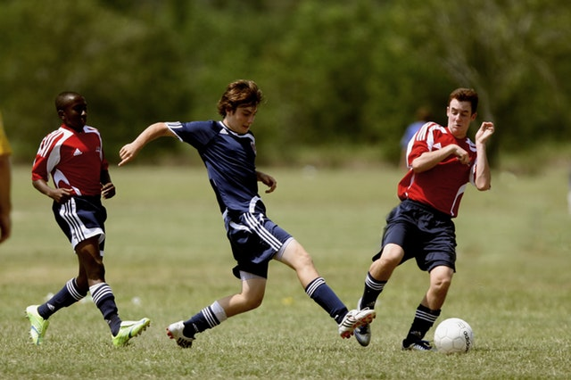

Je suis étudiant à L'IESEG depuis septembre 2019. J'ai fais le choix de cette école car c'est l'une des meilleures en France et dans le monde. Je pense que je peux apprendre plein de choses grâce à celle-ci : y compris apprendre les bases des sites internet grâce à le Wagon. Vous pouvez visiter leur site internet en cliquant sur le bouton ci-dessous !
Mes parents m'ont offert mon premier appareil photo il ya maintenant dix ans de cela, et depuis ce jour j'aime prendre des photos. Mes thèmes de prédilection sont les photos de sport étant un grand adepte de tout genre de sport. Voici un exemple :
Comme je viens de le dire je suis un passionné de sport, et plus particulièrement de football. Je joue au club de Puteaux depuis que j'ai 6 ans. J'ai joué à différent poste mais aujourd'hui je suis numéro 10. A part le jeu en lui même ce sont les valeurs dégagées par ce sport qui me font l'apprécier autant.
📸 ⚽️ 🎬
Dès que j'ai un peu de temps libre, je regarde des films ou des séries. Le dernier film que j'ai particulièrement apprécié est "Le stratège". C'est un film mélant sport et mathématiques, deux domaines que j'aime beaucoup. Sinon, dans un tout autre genre, je pense que mon film préféré est Interstellar, un film de science fiction. J'adore ce film parce qu'il m'a fait me questionner sur la place de l'Homme dans l'univers. Ca n'en a pas l'air comme ca mais selon moi c'est un film très sentimental ! Je le conseillerais à tout le monde, quelque soit l'âge, le sexe et le milieu social. Je pense que tout le monde peut se retrouver dans ce film.